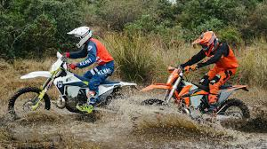
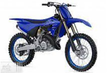
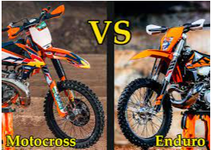
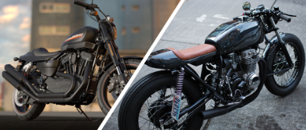
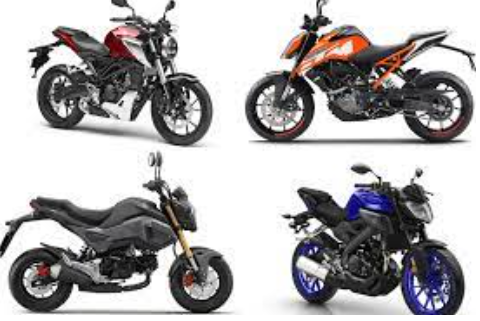
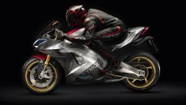
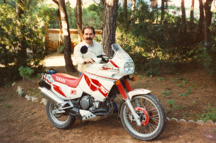

Tipus de motocicletes
1.- Enduro
Són un tipus de motos especials d'ús esportiu per a competències en condicions exigents, tenint en compte els diferents terrenys i obstacles de prova. La seva singularitat radical és que són motocicletes homologades, en altres paraules, que són aprovades per les lleis per a ús urbà, per a camps oberts i coberts de pujades pedregoses.

Pel que fa a l'esport, és una modalitat en el motociclisme que consisteix a fer curses pels múltiples terrenys accidentats que presenta la natura. L'ideal és superar els reptes en avançar per pujades que posen a prova la resistència del pilot.
El vocabulari Enduro, prové d'Endurance, que significa “Resistència”, terme apropiat per a aquest passatemps que requereix de destreses, agilitat i aguant.
2.- Motocross
Una motocicleta de cros és una motocicleta de competició dissenyada per a grans salts i terrenys àrids difícils de recórrer. Aquestes motocicletes tenen les suspensions amb més recorregut que un altre tipus de motocicletes per tenir més suavitat en els salts i millor estabilitat en els terrenys difícils (terra, fang, etc).
Aquest tipus de motocicleta a causa del seu propòsit competitiu, tenen un motor molt potent de 2T o 4T temps, les primeres motocicletes de cross eren 2T a la majoria de les seves cilindrades refredat per aire, amb el temps i les millores de disseny van començar a sorgir a finals dels vuitanta i principis dels noranta els motors refredats per líquid. Els motors de 2T a excepció dels motors petits, van ser utilitzats fins a finals dels noranta en sorgir un nou i millorat motor de 4T de competició que complia amb els requeriments ambientals i potència necessària per a aquest tipus d'esports. Amb aquest tipus de motors s'aplica tota la potència per treure-li la major acceleració possible, ja que no cal tenir molta velocitat. Es fabriquen des dels 49cc fins als 450cc. Són motocicletes que no estan homologades per circular pels carrers ja que la majoria dels seus components i disseny no compleixen les normes civils per poder circular, no tenen matrícula per ser un vehicle utilitzat completament en llocs tancats o complexos esportius.

Aquestes motocicletes són un repte de l'enginyeria i una icona dels esports de 2 rodes pel seu maneig, eficiència i capacitat.
Diferencia moto de enduro i moto de motocross:

3.- Naked
El terme Naked és força descriptiu de quin tipus de moto parlem. Significa, textualment, "nu" en anglès, i fa referència a aquestes motos de carretera que no porten carenat.
Com és obvi, durant molts anys a la història del motociclisme, la immensa majoria de les motos eren «naked». No és fins als anys 80 quan el carenat es converteix en una cosa habitual a les motos de carretera. I precisament allà neix aquesta categoria.

Quan la majoria de les motos de carretera portaven carenat, alguns fabricants es van adonar que hi havia motoristes que enyoraven aquella estètica pura de la moto, models en què el motor era part de la bellesa estètica de la moto. D'altra banda, les esportives carenades eren motos més cares, ja que el carenat no només suposa afegir peces plàstiques que recobreixen la moto, també són suports, càlculs aerodinàmics afegits, peces suplementàries i, per tant, més cost.
Podia fer-se una moto sense tot això, estalviar pes, fer-la més barata i, a més, ser més atractiva per a una part dels potencials compradors. Tenien un altre avantatge: en no portar carenat, solen portar una posició de conducció més alçada i, per tant, més còmoda per al dia a dia, fins i tot a costa de perdre capacitats esportives de les quals, malgrat això, mantenen bona quantitat. La suficient per «enlluernar» gairebé tot el públic.

4.- Deportives
Motocicleta esportiva o moto esportiva és una motocicleta d'altes prestacions destinada a l'ús a la via pública, amb característiques de conducció més agressives. Moltes motocicletes esportives són derivades de motocicletes de velocitat.Les motocicletes esportives van equipades majoritàriament d'un carenat, que millora la seva aerodinàmica, per aconseguir altes velocitats, habitualment per sobre dels 250 km/h o fins i tot més de 300 km/h en els models més exòtics.
La posició de conducció d'una motocicleta esportiva usualment és molt agressiva, en el sentit que obliga el cos a estar molt avançat. Amb això es guanya estabilitat a la direcció i facilita l'aerodinàmica.Habitualment són les motocicletes de carrer amb millor relació pes potència. Això s'aconseguix amb motors d'alta cilindrada i materials lleugers.

És una motocicleta molt millorada dels utilitzats a la competició de velocitat, la motocicleta de tipus esportiu és capaç de l'acceleració ràpida i màximes velocitats. Segons la cilindrada i la vocació més o menys afirmada per la competició en circuit, hi ha dues categories predominants al món de l'esport: la "Superesportiva" (600 cm 3 ) i la " Superbike " (1000 cm 3).). Evidentment, hi ha desplaçaments intermedis, fins i tot més baixos o més alts. La potència del motor i la lleugeresa del xassís són els principals arguments comercials. Aquestes motocicletes són poc adequats per a l'ús urbà a causa del seu mal maneig a baixa velocitat, sovint difícils d'establir suspensions que fan el seu comportament incòmode en carreteres degradades, i la seva posició de conducció "al front" que no afavoreix la seva capacitat de viatjar . El duo és possible per homologació, encara que aquesta no és la seva vocació principal. El seu preu de venda (aparador tecnològic per als fabricants) i el cost del seu manteniment (pneumàtics tous, motors empesos) són obstacles per a la compra de molts motociclistes
5.- Trail
Pel seu significat en anglès es podria dir que és una moto adequada per circular per pistes, és a dir, per qualsevol tipus de via, carril o sender. Si donem per vàlid aquest concepte es pot dir que no és una moto de tot terreny o enduro que són més aptes per a terrenys escarpats, camp a través, etc.

Però de vegades els camins o pistes poden estar en mal estat i ja sabem que de vegades aquests camins rurals es veuen travessats per rierols a llocs on no hi ha ponts i també segueixen els desnivells del terreny més directament que una carretera normal. Bé en realitat res que no es pugui fer fins i tot amb una scooter...
Però si volem anar amb certa comoditat i facilitat per aquests camins, el seu fort és utilitzar una moto amb les relacions de canvi adequades, amb bon recorregut de suspensions, amb certa alçada lliure per salvar obstacles i vorejar rierols… fins i tot amb acompanyant a bord.
En definitiva la moto ideal per viatjar per llocs pintorescos i atrevir-se a arribar fins aquell castell, pel camí serpentejant que veiem des de la carretera (secundària suposo)… i quan arribi l'hora de tornar a casa, et permeti un bon creuer per les vies ràpides i amb una bona protecció aerodinàmica i comoditat. Per mi això és una TRAIL.